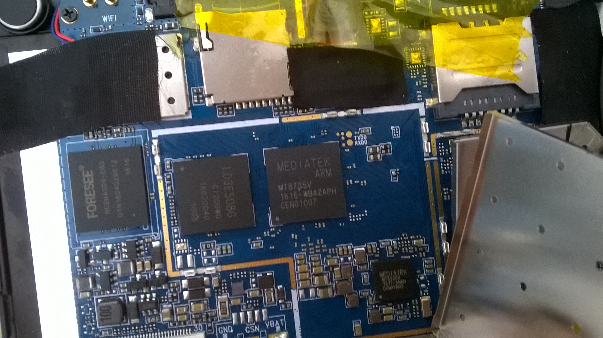

Oysters T84Bi 4G (oysters-t84bi-4g)
Jump to navigation
Jump to search
|
200px CHANGE_ME | |
| Manufacturer | Oysters |
|---|---|
| Name | T84Bi 4G |
| Codename | oysters-t84bi-4g |
| Released | 2016 |
| Category | testing |
| Original software | Android |
| Original version | 6.0 |
| Hardware | |
| Chipset | MediaTek MT8735 |
| CPU | 4x Cortex-A53 1.3 GHz |
| GPU | Mali-T720 |
| Display | 1280x800 IPS |
| Storage | 8 GB |
| Memory | 1 GB |
| Architecture | aarch64 |
{kind=link}
This device is marked as not booting.
| USB Networking | |
|---|---|
| Flashing | |
| Touchscreen | |
| Display | |
| WiFi | |
| FDE | |
| Mainline |
Works
|
| Battery | |
| 3D Acceleration | |
| Audio | |
| Bluetooth | |
| Camera | |
| GPS | |
| Mobile data | |
| SMS | |
| Calls | |
| USB OTG | |
| NFC | |
| Accelerometer | |
|---|---|
| Magnetometer | |
| Ambient Light | |
| Proximity | |
| Hall Effect | |
| Barometer | |
| Power Sensor | |
| Camera Flash | |
|---|---|
| Keyboard | |
| Touchpad | |
| USB-A | |
| HDMI/DP | |
| Ir TX | |
| Ir RX | |
| Stylus | |
| Haptics | |
| Ethernet | |
| FOSS bootloader | |
|
This device is based on the MediaTek MT6735. See the SoC page for common tips, guides and troubleshooting steps |
Contributors
- km2
Users owning this device
How to enter flash mode
Installation
UART
There are several test points under the SoC cover. For uart, you need TxD0 (transmit) and RxD0 (receive). Standard Serial Console Speed 921600 
{kind=link}